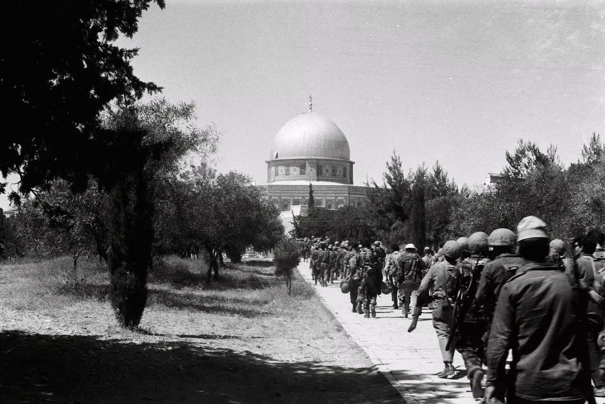
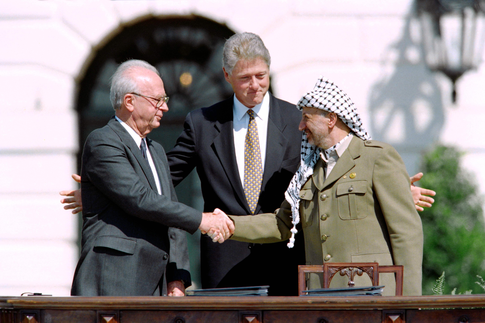
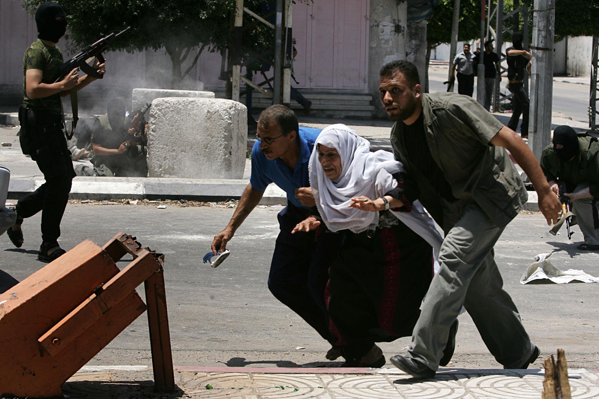
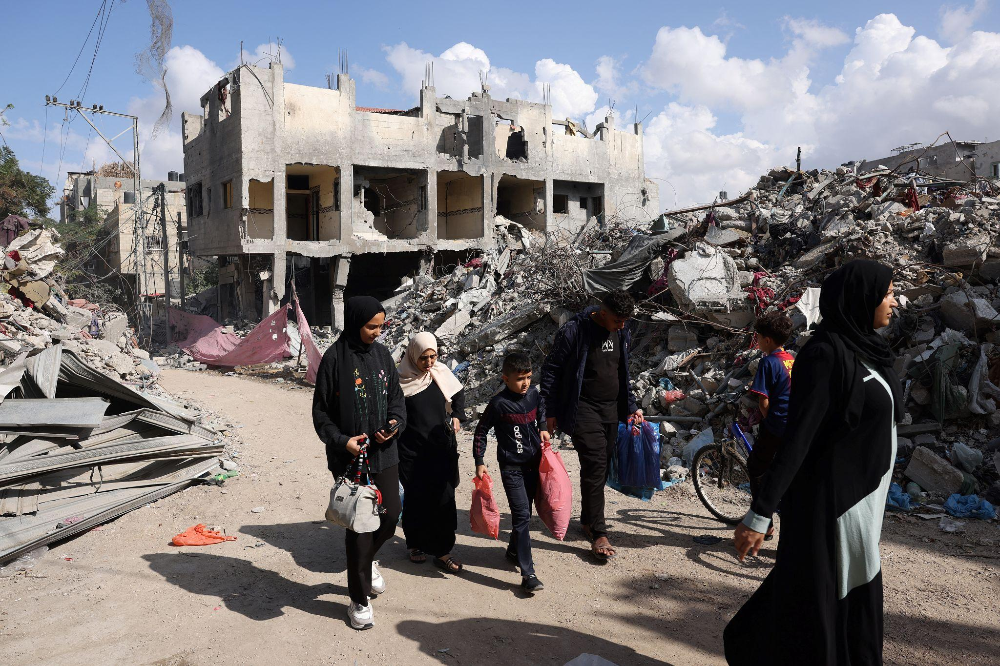

Un conflicto con profundas raíces históricas
Para comprender la situación actual de Palestina, es necesario mirar atrás y conocer los acontecimientos que transformaron el territorio y la vida de su población. Durante décadas, las aspiraciones nacionales palestinas y el movimiento sionista, que defendía la creación de un hogar nacional judío en Palestina, se desarrollaron en una misma tierra, en un contexto de creciente tensión política y territorial.
1917
Palestina bajo administración británica
Tras la caída del Imperio otomano, Palestina quedó bajo el Mandato Británico. En 1917, la Declaración Balfour expresó el apoyo británico al establecimiento de un hogar nacional para el pueblo judío en Palestina, sin perjuicio de los derechos civiles y religiosos de las comunidades no judías existentes. Durante las décadas siguientes aumentó la inmigración judía, especialmente como consecuencia de la persecución antisemita en Europa, mientras la población árabe palestina reclamaba su independencia y se oponía a determinadas políticas británicas y al proyecto sionista.


La Nakba
Se proclamó el Estado de Israel y estalló la guerra. Más de 700.000 palestinos huyeron o fueron expulsados de sus hogares. Los palestinos conocen este desplazamiento masivo como la Nakba, que significa catástrofe en árabe. Muchas familias se convirtieron en refugiadas y no pudieron regresar a sus lugares de origen. La cuestión de los refugiados y el derecho al retorno continúan siendo asuntos centrales del conflicto.
1948
1967
El inicio de la ocupación
En las décadas posteriores se expandieron los asentamientos israelíes en los territorios ocupados y se establecieron diferentes sistemas de control territorial, permisos y restricciones de circulación. Estas políticas han afectado al acceso a las tierras, la vivienda, los recursos y los servicios esenciales de numerosas comunidades palestinas.


Los Acuerdos de Oslo
Los Acuerdos de Oslo abrieron una nueva etapa de negociaciones entre Israel y la Organización para la Liberación de Palestina (OLP). Se creó la Autoridad Palestina y se establecieron mecanismos de autogobierno limitado en determinadas zonas. Sin embargo, cuestiones fundamentales como las fronteras definitivas, Jerusalén, los refugiados y los asentamientos quedaron pendientes. El proceso de paz no logró establecer un Estado palestino independiente ni resolver el conflicto.
1993
2007
Tomada de la Franja de Gaza
En 2007, Hamás tomó el control de la Franja de Gaza tras enfrentamientos con Fatah. Israel endureció las restricciones sobre Gaza, que ya estaba sometida a medidas de control, y Egipto también restringió el paso por su frontera. El bloqueo y los sucesivos enfrentamientos militares agravaron las condiciones de vida de la población.


la persistencia del conflicto
El 7 de octubre de 2023, Hamás y otros grupos armados atacaron Israel, matando a civiles y militares y tomando rehenes. Israel respondió con una ofensiva militar a gran escala en Gaza, que provocó una destrucción generalizada, desplazamientos masivos y una grave crisis humanitaria.
2023
Un conflicto que sigue sin resolverse
La situación actual es el resultado de décadas de desplazamientos, ocupación, enfrentamientos y negociaciones fallidas. Para la población palestina, cuestiones como la autodeterminación, el territorio, la libertad de movimiento y el derecho al retorno siguen siendo fundamentales. Comprender esta historia permite analizar las políticas actuales y sus consecuencias sin reducir la experiencia de todo un pueblo a una guerra o a una fecha concreta.
Las restricciones impuestas a la población palestina
La ocupación israelí y las políticas aplicadas en los territorios palestinos afectan a numerosos aspectos de la vida cotidiana. Las restricciones de movimiento, el control territorial y las limitaciones de acceso a recursos y servicios condicionan la libertad y las oportunidades de la población palestina.
-
Libertad de movimiento
En Cisjordania, los puestos de control militares, las barreras y los permisos de circulación dificultan los desplazamientos entre ciudades y comunidades. Estas medidas pueden afectar al acceso al trabajo, la educación y la atención médica.
-
Territorio y asentamientos
La expansión de los asentamientos israelíes en Cisjordania y Jerusalén Oriental contribuye a fragmentar el territorio palestino y limita el acceso de algunas comunidades a sus tierras y recursos. El derecho internacional considera ilegales los asentamientos israelíes en los territorios palestinos ocupados.
-
Fronteras y bloqueo de Gaza
Las restricciones a la entrada y salida de personas y mercancías han afectado durante años a la economía y a las condiciones de vida en Gaza. Las operaciones militares y las limitaciones a la entrada de ayuda humanitaria han agravado las dificultades para acceder a alimentos, agua potable, medicamentos y refugio.
-
Vivienda y desplazamientos
Las demoliciones de viviendas y otras estructuras palestinas, incluidas las relacionadas con la falta de permisos de construcción, pueden provocar desplazamientos y dejar a familias sin hogar. Las expulsiones y los desplazamientos forzados también generan preocupación por la protección de la población civil.
-
Agua y recursos naturales:
Las restricciones de acceso, las diferencias en las infraestructuras y el control de determinados recursos dificultan el abastecimiento de agua en algunas comunidades palestinas. Esto afecta al consumo doméstico, la agricultura y el desarrollo económico.
-
Residencia y vida familiar
Las políticas de residencia, los permisos y las restricciones administrativas pueden dificultar la permanencia en determinadas zonas, la reunificación familiar y el acceso a servicios, especialmente en Jerusalén Oriental.
¿Qué consecuencias tienen estas restricciones?
Estas medidas repercuten en la vida diaria de la población palestina: dificultan la movilidad, limitan las oportunidades económicas, aumentan la inseguridad residencial y obstaculizan el acceso a servicios esenciales.
Aunque las autoridades israelíes justifican determinadas restricciones por motivos de seguridad, su aplicación y sus efectos deben evaluarse conforme al derecho internacional. En su dictamen de julio de 2024, la Corte Internacional de Justicia concluyó que la presencia continuada de Israel en el territorio palestino ocupado es ilegal y señaló las obligaciones internacionales de Israel respecto al fin de esa presencia.
Hablar de estas restricciones significa analizar cómo las políticas de ocupación afectan a los derechos, la dignidad y las condiciones de vida de la población palestina.